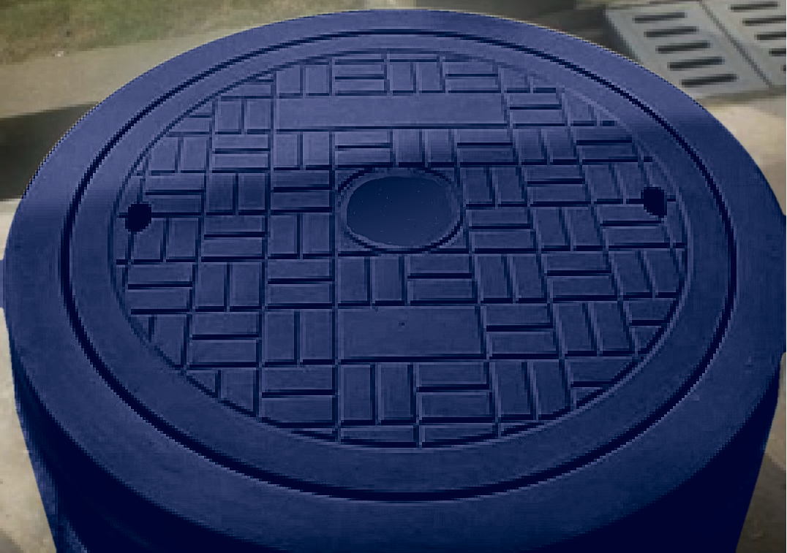
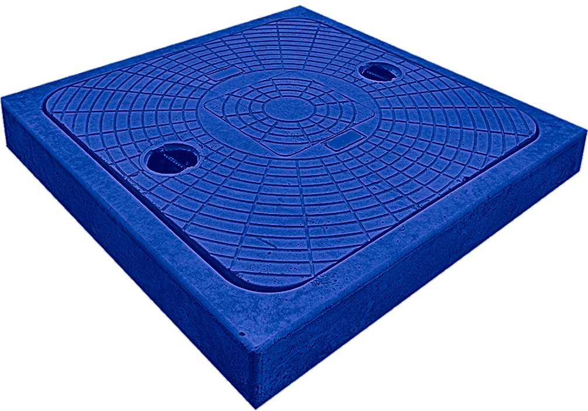
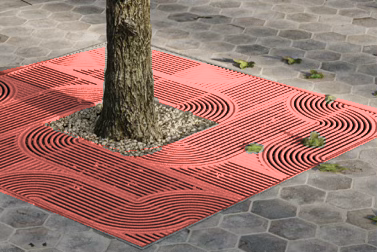
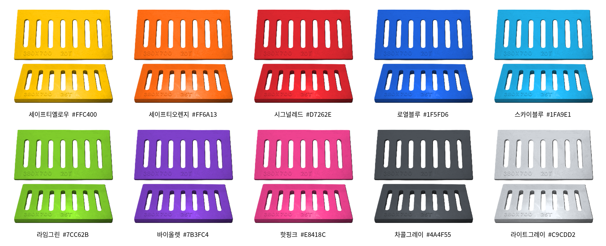

그레이팅
그레이팅 · 측구덮개
철근콘크리트·스틸 그레이팅의 한계를 극복. 표면이 매끄러워 퇴적물이 쌓이지 않고 야외에서도 새것 같은 상태를 유지합니다.
100MPa↑400kN / 200kN맞춤 규격

맨홀뚜껑
원형 맨홀뚜껑
도난 걱정이 없는 비금속 소재, 특허 제10-2975878호 구조체. 다양한 컬러와 패턴으로 제작합니다.
120MPa↑Φ648~918도난방지

맨홀뚜껑
사각 맨홀 프레임
사각 프레임형 맨홀. 설치 환경에 맞춰 크기와 색상을 맞춤 제작합니다.
120MPa↑맞춤 규격컬러 선택

가로수보호판
원형 가로수보호판
뿌리 돌출을 억제하면서 공기·물이 원활히 공급되도록 설계. 보도 미관을 높입니다.
120MPa↑원형LID

가로수보호판
사각 가로수보호판
보도 블록과 조화되는 사각형 보호판. 색상·질감 맞춤이 가능합니다.
120MPa↑사각맞춤 컬러

집수정덮개
집수정덮개
고유동 소재의 장점을 살려 다양한 색상(최대 20여 종)과 형상으로 제작 가능합니다.
고강도컬러 다양맞춤 제작

※ 컬러는 예시이며 원하는 색상으로 맞춤 제작이 가능합니다. 이미지는 시각화 자료입니다.